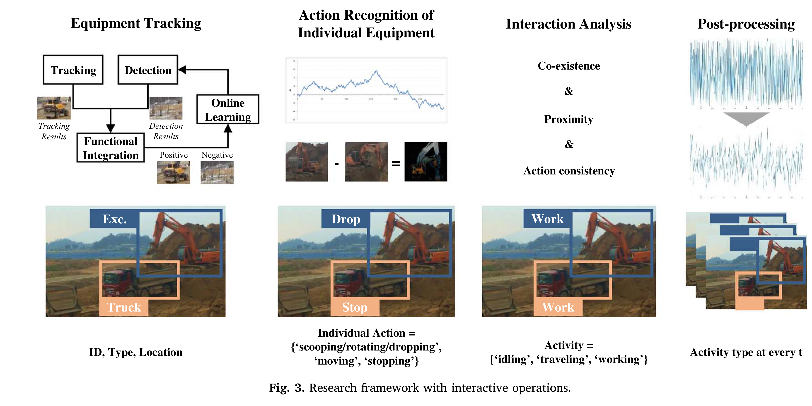
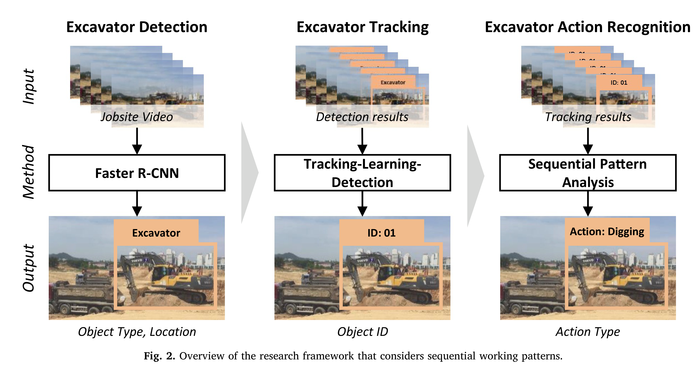
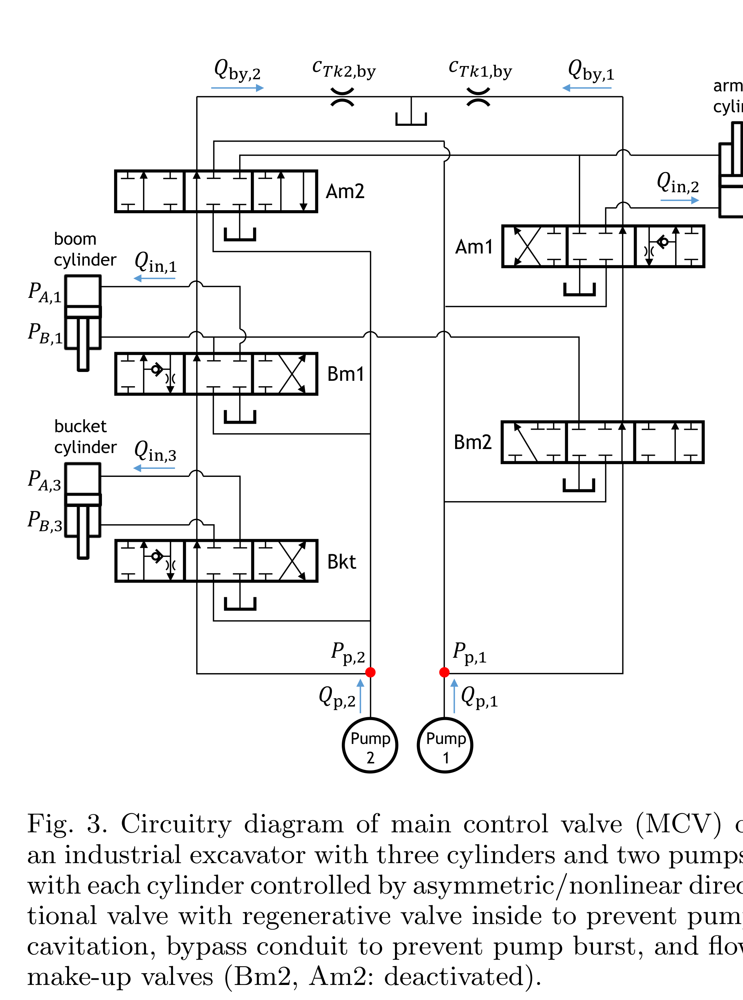
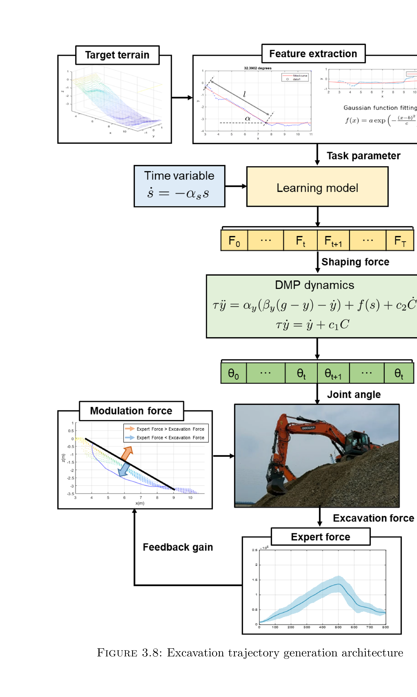
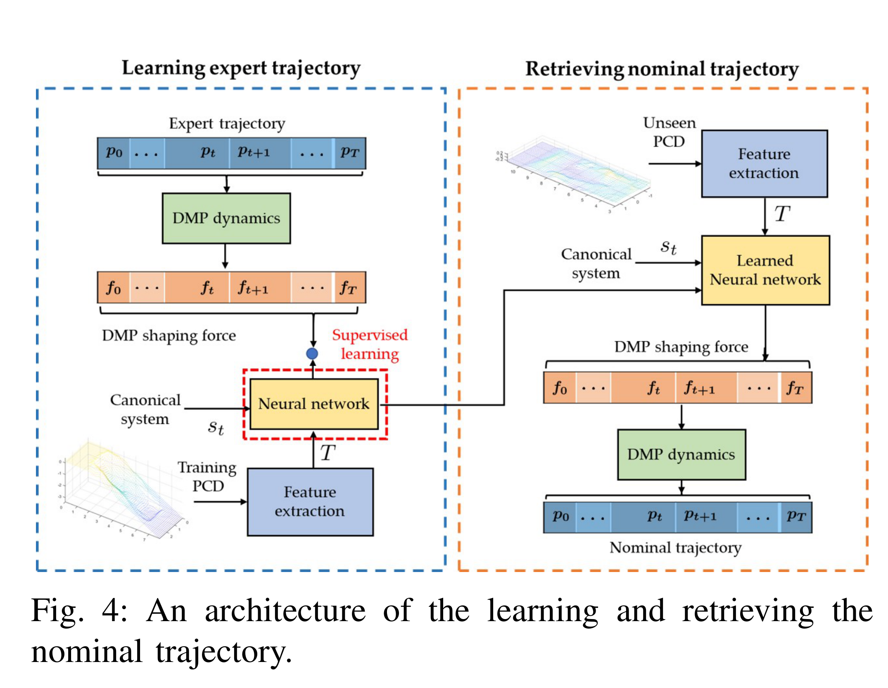
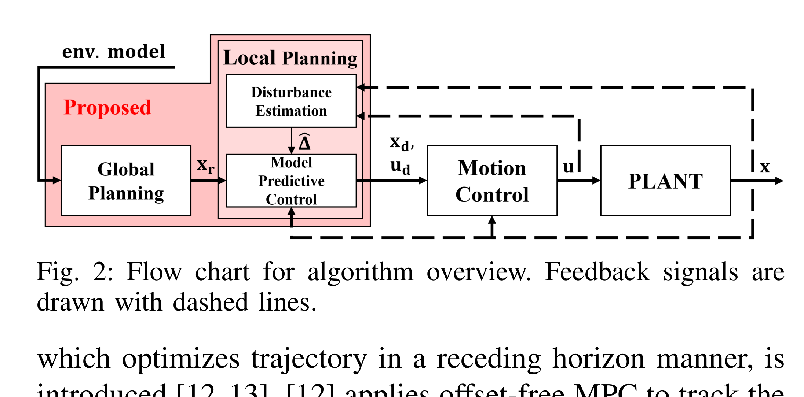
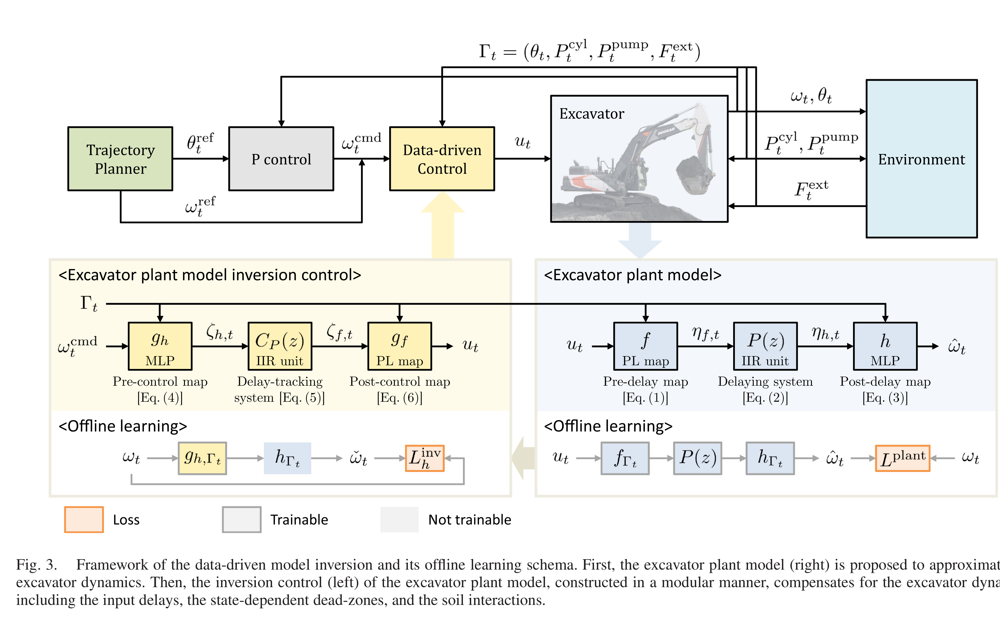
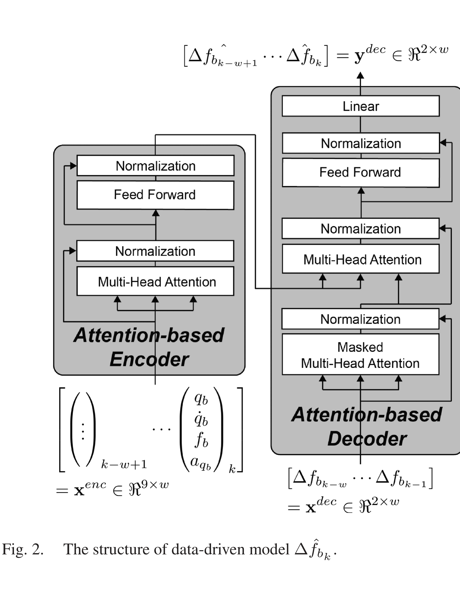
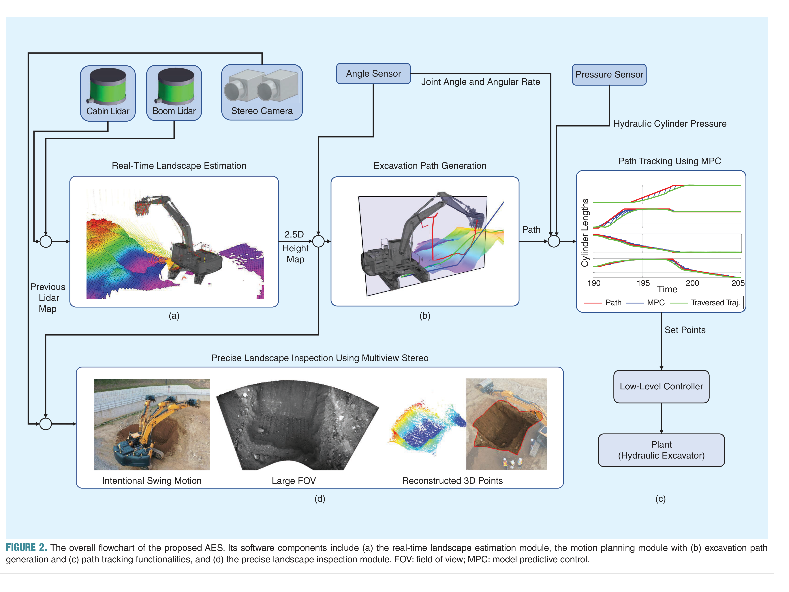
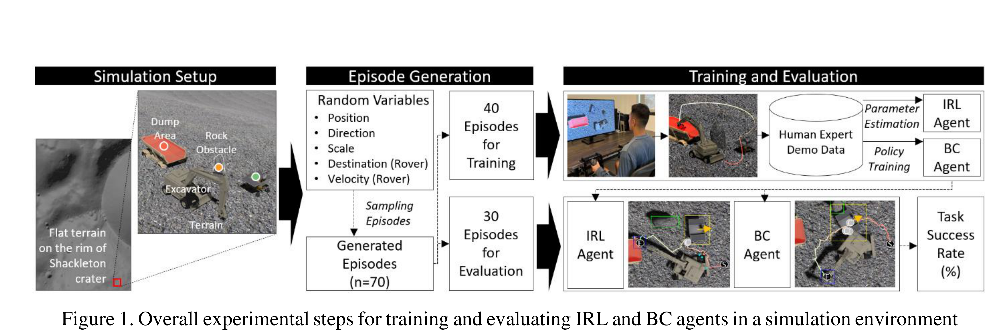

서울대 자율굴착 논문 카드 요약 2018-2025
서울대 자율굴착 논문 카드 요약 2018-2025
[!note] 2018 · 장비 상호작용 기반 작업 인식 1) 대표그림

2) 요약
굴착기·덤프트럭의 행동과 공존·근접·일관성을 결합한 작업·이동·대기 상태 구분.
3) 방법
- 고정 카메라와 TLD 기반 굴착기·덤프트럭 검출·추적.
- 영상 차분·시공간 규칙 기반 장비별 행동 판정.
- 거리·동시 존재·행동 조합 규칙을 이용한 작업상태 후처리.
4) 토의
- 한계: 2D 고정시점·조명·수작업 임계값 의존.
- 연구주제: 단안 3D 자세와 V2X를 융합한 장비 협업·안전 인식.
[!note] 2019 · 굴착 작업 순서 기반 행동 인식 1) 대표그림

2) 요약
Faster R-CNN·TLD와 CNN-DLSTM으로 외형 변화·굴착 순서를 함께 학습한 6개 행동 연속 판정.
3) 방법
- 현장 영상 프레임화와 6개 행동·장비 영역 라벨링.
- Faster R-CNN 검출·TLD 추적 기반 장비별 시퀀스 생성.
- CNN 특징과 2단 LSTM 기반 시각 변화·작업주기 판정.
4) 토의
- 한계: 전환 동작·수직 이동의 모호성, 대규모 수작업 라벨 필요.
- 연구주제: 자기지도 영상 특징과 다중라벨 전환 검출 결합.
[!note] 2019 · MCV 모델링·속도장 제어 1) 대표그림

2) 요약
두 펌프·세 실린더 공유 MCV 모델과 유량 제약 기반 버킷 속도장 방향 유지·감속·정지.
3) 방법
- 펌프·밸브·실린더 압력·유량 및 MCV 전환회로 모델링.
- 목표 버킷 속도장의 관절속도·실린더 요구유량 변환.
- 펌프·스풀 제약 QP 기반 속도 조절과 유압 시뮬레이션.
4) 토의
- 한계: 시뮬레이션 검증 한정, deadband·압축성 단순화.
- 연구주제: 압력·스풀 데이터 기반 MCV 온라인 식별·강인 QP 제어.
[!tip] 2020 · 숙련자 굴착력 기반 궤적 생성(석사논문) · 🧪 재현 추천 1) 대표그림

2) 요약
숙련자 DMP shaping force 학습과 과도한 추정 굴착력 발생 시 실시간 얕은 궤적 변조.
3) 방법
- 평지·두 경사 시연 18회의 관절·압력·지형조건 수집.
- MLP 기반 DMP shaping force 복원과 기준 관절궤적 생성.
- 외란관측기 굴착력과 숙련자 기준 비교 기반 coupling term 변조.
4) 토의
- 한계: 제한된 시연·토질, coupling gain 수동 조정.
- 연구주제: 압력 기반 토질 임베딩을 이용한 DMP·gain 온라인 적응.
[!note] 2020 · 숙련자 모사 굴착 궤적 계획(IROS) 1) 대표그림

2) 요약
지형조건별 숙련자 시연의 DMP·MLP 일반화와 힘 피드백 기반 실시간 궤적 수정.
3) 방법
- 평지·경사 시연의 관절궤적·굴착력 패턴 추출.
- 경사·깊이 입력 MLP 기반 DMP 기준궤적·힘 기준 생성.
- 외란관측기 힘 오차 기반 coupling term 변조.
4) 토의
- 한계: 석사논문 핵심 압축판이며 토질 일반화 미해결.
- 연구주제: 다양한 토질 시연을 이용한 미지 지반 힘 적응성 검증.
[!tip] 2021 · 전역 궤적최적화·MPC · 🧪 재현 추천 1) 대표그림

2) 요약
굴착량·에너지 전역 최적화와 유압·동역학 제약을 반영한 30 Hz 이상 외란추정 MPC 추종.
3) 방법
- 지형·목표·장비 한계 입력과 굴착 3구간 분할.
- Bernstein 다항식 기반 굴착량·에너지 전역 궤적 최적화.
- 외란추정·제약 DDP/MPC 기반 receding-horizon 추종.
4) 토의
- 한계: 알려진 지형의 시뮬레이션 검증 한정.
- 연구주제: 디지털 트윈·실시간 LiDAR 지형 연계 실차 재계획.
[!tip] 2022 · 데이터 기반 역모델 정밀제어 · 🧪 재현 추천 1) 대표그림

2) 요약
지연·dead-zone·토양외력 모듈식 신경모델과 역모델+P 제어를 통한 38t 굴착기 경로오차 2cm 이내 달성.
3) 방법
- 실작업 조이스틱·관절·압력·외력 데이터 수집.
- 지연 전후·dead-zone·토양외력 모듈 분리 학습.
- 학습모듈 역모델 전향입력+P 피드백 기반 궤적 추종.
4) 토의
- 한계: 장비별 오프라인 데이터 의존, 상태별 지연 일반화 난점.
- 연구주제: 장비·토질 변화에 안전 적응하는 온라인 역모델.
[!tip] 2025 · 미끄럼·전복 방지 궤적 변조 · 🧪 재현 추천 1) 대표그림

2) 요약
미끄럼 힘비·ZMP 선형 안전제약과 Transformer 힘예측·robust QP 기반 경사 굴착 DMP 실시간 변조.
3) 방법
- 경사면 관절·압력·자세 기반 마찰비·ZMP 계산.
- Transformer 기반 다음 힘 차이 예측·잔차 범위 추정.
- 미끄럼·전복 제약을 만족하는 robust QP 기반 DMP 변조.
4) 토의
- 한계: 축소모형·단일 토질·2D 조건, 비매끄러운 궤적 가능성.
- 연구주제: 3D 지형·tiltrotator를 포함한 smooth robust MPC.
[!tip] 2025 · 완전 통합 자율굴착 시스템 · 🧪 재현 추천 1) 대표그림

2) 요약
온보드 LiDAR·카메라 지형추정, 제약기반 경로·MPC, 반복절토·다중시점 검사의 30t 굴착기 통합.
3) 방법
- LiDAR 2대·stereo camera 보정과 elevation grid 생성.
- DFS 절토·정지 경로 탐색과 동력·유량 제약 MPC 추종.
- 목표까지 반복 굴착 후 선회 다중시점 영상 검사.
4) 토의
- 한계: 단일 사면 작업, 암반·차체이동·어두운 영상 조건 미검증.
- 연구주제: 압력 기반 3D 굴착성 지도와 차체·작업 통합계획.
[!note] 2025 · 달 환경 인간모사 역강화학습 1) 대표그림

2) 요약
장애물 회피·목표 배치 보상과 시간할인을 분리 추정한 모듈형 IRL의 달 환경 성공률 73%(BC 30%).
3) 방법
- Unity 달 지형에서 조이스틱 시범의 관절·장애물·목표 상태 기록.
- 2개 subtask 분해와 HMC 기반 보상가중치·할인율 추정.
- 40개 학습·30개 평가 배치에서 IRL·behavior cloning 비교.
4) 토의
- 한계: 단순 충돌·중력 모델과 본체 지각 부족에 따른 비효율 정지.
- 연구주제: 3D 지각·유압·토사 동역학을 결합한 안전제약 IRL 실차 전이.